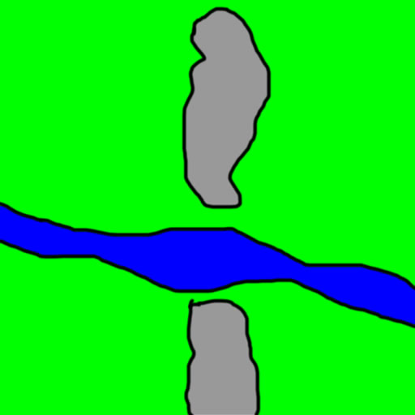
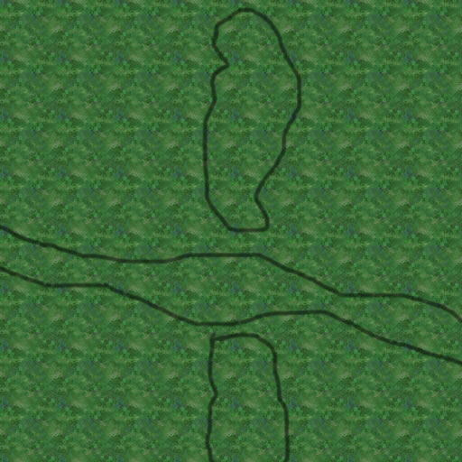
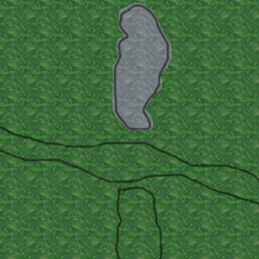
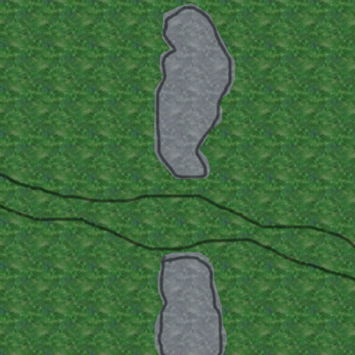
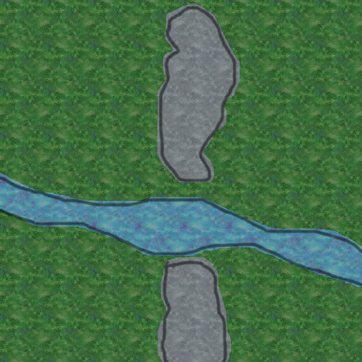

Tutorial:BasicMapMaking(Maelstrom)
Development < Map Development < Tutorial:BasicMapMaking(Maelstrom)
Basic Map making
This tutorial is designed to help people make a basic map in an image editor like Photoshop. Things covered in this tutorial include:
- Making a basic concept drawing
- Making and using tiles
- Placing major map features
- Making use of layers to easily design and modify the map
First things first, we need to set up some folders and stuff to make all our lives easier. As the map compiler does not accept path names with spaces in them, it is easier if we just place the files in a folder straight on the C:\ drive. So, heres what folders to make:
- C:\Maps\
- MapName\
- Tiles\
- Texture\
- Metal\
- Height\
- MapName\
When we save each file, save them to the relevant folder. When we have finished that file, export it as a .bmp into the MapName folder for convinience. Remeber to save regularly, so as not to loose any work!
Whenever you create another map, make the same folders again. It makes life just that little bit easier.
Step 1: Concept Drawing
First things first, we need an idea of what the map will be about. For this map, I have made the following picture: 
{kind=link}
Green areas will be grass, Grey is mountains and Blue is water. This design does not need to be a major work of art, it just needs to convey the basic idea of the map, so that you have something to work off later.
Step 2: Making Tiles
The secret to small file sizes for maps is tiles. A Tile is a small picture that is repeated on the texture many times. This texture is then tiled by the map converter, and a 400mb 10240x10240 pixel big bitmap is transformed into a 200kb map file. The tiling system is very powerfull and very handy, but we still need to give it a hand.
Tiles in spring are based on 32x32 peices of the texture. Therefore, for our tiling to work correctly, our tile needs to be a size that is a multiple of 32. Sizes include:
- A basic, but boring looking 32x32 pixels
- A slightly better, but still slightly repetetive 64x64 pixels
- A good size of 128x128 pixels
- A large 256x256 pixels
Tiles can also be rectangular, and can be anything between the numbers mentioned above, but still need to be multiples of 32. To look good, tiles also need to be seamless, so when they are repeated no obvious join can be seen between the tiles.
For my map, as it has grass, mountains and a river I need three tiles.
- A green Grass Tile
{kind=link}
- A grey Mountain Tile
{kind=link}
- A blue River tile
{kind=link}
Step 3: Setting up the Texture layers
A textures needs to be a certain size for it to work in the Spring engine. Textures must always be a size that is a multiple of 1024 pixels. 1024 pixels will equal 2 map 'size units' in the Spring engine, so a map of 5120x5120 pixels will be a 10x10 map. For a better description, go to one of the other pages.
We will need 4 layers for our map texture. One layer for our Grass texture, one for our Mountains, one for the River and one for the Concept drawing. First things first, make 4 layers. Fill the very bottom layer with the Water texture. The next layer is for the mountain texture, and the next is for the grass layer. Then, over all that, you draw in your concept again, but this time only the borders of the area's. Doing all this will make your life alot easier, and will help out alot in the long run.
Your texture should now look something like this, but just alot bigger: 
{kind=link}
Step 4: Placing the major features
Now that you have your layers set up, you can start placing things like mountains and rivers. To do this, select the grass layer, and grab the eraser tool. Following the outline from your Concept design, rub out an area for the mountain to poke through. 
{kind=link}
Then, do the other mountain: 
{kind=link}
Now, we need to do the river. As the river layer is 'below' the gras layer AND the mountain layer, we need to rub a hole in each of them. So, pull out the eraser again, and get rubbing! 
{kind=link}
After that, turn the concept drawing off, and there you have one tile base, small filesize texture! With a bit of playing around, blurring the edges, adding more layers, and little stuff like that you can make a really good looking map by just using an image editor. Just look at River Dale for an example!
Step 5: Making a height map
This is one of the tricker bits to get right. But without a good height map, your map is also no good. So, down to buisness!
A height map is a picture that the Spring uses to work out the height of different bits of land. Hence, a height map. A height map looks a little strange at first, but you get the hang of the pretty quickly. A height map will be a greyscale image (an image made up of shades of grey, as opposed to colours), where white represents mountains, and black valleys, or water.
First off, the height map needs to be a different size to the texture. The height map needs to be 1/8th of the size of the texture, plus one pixel. So, to make this easier, here is a nice formula!
Height map size = (Texture size / 8) 1
For this tutorial my height map will be the same size as my texture, but thats just so I can show you how to make it easier.
OK, now onto the height map! Make 2 layers. On the bottom layer, put your Texture, just resized to the right size. The top layer will be where we are going to draw our height map. To help us do this, we need to set the Opcaity (how transparent an image is) of the height map layer to around 50%. Some people like more, some people like less.
Grab the paint bucket tool and fill the whole of the height map dark grey. This will be the flat, grassy bit of our map. Then, grab the paint brush tool, set it to White, make it big and make the edges soft. When you paint with this brush you should get a white dot in the middle, with a steady fall off towards the grey that you have as your grass. Use this brush to paint in some mountains, with the White in the center, slowly fading out to the grey grass on the out side.
{kind=link}
Then, make the same brush black, and draw a big long line for the river.
{kind=link}
When this is done, make the Opacity of the Height map 100% again, and save the picture. The Height map is done! It may require some tweaking later, but its fine for now.
{kind=link}
Step 6: Metal Map
The metal map is alot like the height map. It is 1/8th the size one pixel. You can still underlay the texture for reference. It is still just a simple picture, like the height map. But this time, you need to do it in 'redscale', instead of greyscale. That is, using only red, and no green or blue. The more red the colour, the more metal is given. Depending on the style of map you want is how you make your metal map. For this map, we are going with an OTA style map with metal patches.
Make 2 layers. On the bottom layer, we will have our texture. On the top layer we will draw in the metal. For now, we can leave the metal layer empty, with full opacity, unlike the metal map.
Grab a brush. Make it about 3 pixels big and square. Make the colour about half red, with all the other colours all the way down. This will be some low metal patches for the starting positions. Place a couple of patches around the corners, enough to start with, like so:
{kind=link}
Then, make the brush full red. Place some more patches in places like the mountains, and the middle of the map. Places that will be under constant attack. These will be the good spots for the players willing to risk it for the extra metal.
{kind=link}
Now we need to hide the texture. To do this, grab the paint bucket tool and fill in the empty area black. You have now finished your metal map. Save the picture and your done!
{kind=link}
Feature Map
A feature map is used to place Grass, Trees, Geovents and Features on a map. The tutorial will not cover how to make this, however the file is still needed. So we will just make a blank Feature map.
Feature maps are a bit like the other maps, however instead of being one eighth of the texture 1 pixel, they are just one eighth of the texture. So, for example, instead of being 129x129 pixels, your Feature map will be 128x128 pixels. Create a picture that is the required size, and fill it black. If you fill it white, you will overload the game, and it will probably crash. Which is a bad thing.
Compiling
For compiling, see the compiling tutorial